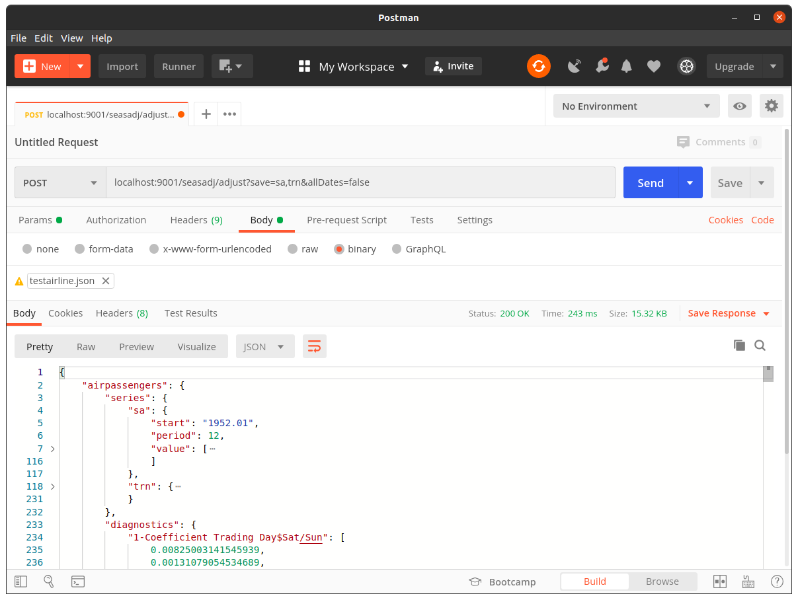

Overview
X13-ARIMA-SEATS is a widely used seasonal adjustment program developed by the United States Census Bureau. It’s a command-line tool, and I’ve wondered whether it would be useful to run as a web service–where I work, the standard security model makes running command-line tools a little problematic, so running a single service that could be accessed by any other client remotely would seem, on the face of it, a useful proposition.
A Simple Example…
The X13 binary ships with a relatively simple example using the famous Box and Jenkins air passengers data. That is, a simple specification is provided in a file called testairline.spc:
series{
title="International Airline Passengers Data from Box and Jenkins"
start=1949.01
data=(
112 118 132 129 121 135 148 148 136 119 104 118
115 126 141 135 125 149 170 170 158 133 114 140
145 150 178 163 172 178 199 199 184 162 146 166
171 180 193 181 183 218 230 242 209 191 172 194
196 196 236 235 229 243 264 272 237 211 180 201
204 188 235 227 234 264 302 293 259 229 203 229
242 233 267 269 270 315 364 347 312 274 237 278
284 277 317 313 318 374 413 405 355 306 271 306
315 301 356 348 355 422 465 467 404 347 305 336
340 318 362 348 363 435 491 505 404 359 310 337
360 342 406 396 420 472 548 559 463 407 362 405
417 391 419 461 472 535 622 606 508 461 390 432)
span=(1952.01, )
}
spectrum{
savelog=peaks
}
transform{
function=auto
savelog=autotransform
}
regression{
aictest=(td easter)
savelog=aictest
}
automdl{
savelog=automodel
}
outlier{ }
x11{}One could adjust this at the command line by running something like (there are a number of ways the program can be invoked):
x13ashtml testairline -g gAdding the g flag with value g tells X13 we wish to save output to subdirectory g, and we will end up with a number of text files matching the pattern g/testairline.*. For example, a range of diagnostics will be written as key-value pairs in a file called g/testairline.udg, the first few lines of which would look similar to:
date: Jun 1, 2020
time: 14.19.08
version: 1.1
build: 39
output: html
srstit: International Airline Passengers Data from Box and Jenkins
srsnam: testairline
freq: 12
span: 1st month,1952 to 12th month,1960
nobs: 108
constant: 0.0000000000E+00
transform: Automatic selection
...The seasonally adjusted and trend series would be saved as g/testairline.d11 and g/tsairline.d12, respectively, and the first few rows of the D11 table would look as follows:
date testairline.d11
------ -----------------------
195201 +0.192925972176234E+03
195202 +0.198588812698691E+03
195203 +0.185791217572829E+03
195204 +0.185841707777349E+03
195205 +0.186173988743725E+03
195206 +0.192599054707605E+03
195207 +0.187601439031062E+03
195208 +0.200184926772685E+03
...…as a Service
I created a basic library which can be used to run X13 programmatically on the JVM (the library is written in Scala), and also as a web service (the web service itself is written using Akka HTTP). The above test specification would be converted to JSON in somewhat obvious fashion as follows:
{
"airpassengers":{
"series":{
"title":"International Airline Passengers Data from Box and Jenkins",
"start":"1949.01",
"data":[
112, 118, 132, 129, 121, 135, 148, 148, 136, 119, 104, 118,
115, 126, 141, 135, 125, 149, 170, 170, 158, 133, 114, 140,
145, 150, 178, 163, 172, 178, 199, 199, 184, 162, 146, 166,
171, 180, 193, 181, 183, 218, 230, 242, 209, 191, 172, 194,
196, 196, 236, 235, 229, 243, 264, 272, 237, 211, 180, 201,
204, 188, 235, 227, 234, 264, 302, 293, 259, 229, 203, 229,
242, 233, 267, 269, 270, 315, 364, 347, 312, 274, 237, 278,
284, 277, 317, 313, 318, 374, 413, 405, 355, 306, 271, 306,
315, 301, 356, 348, 355, 422, 465, 467, 404, 347, 305, 336,
340, 318, 362, 348, 363, 435, 491, 505, 404, 359, 310, 337,
360, 342, 406, 396, 420, 472, 548, 559, 463, 407, 362, 405,
417, 391, 419, 461, 472, 535, 622, 606, 508, 461, 390, 432
],
"span":["1952.01", null]
},
"spectrum":{
"savelog":"peaks"
},
"transform":{
"function":"auto",
"savelog":"autotransform"
},
"regression":{
"aictest":["td", "easter"],
"savelog":"aictest"
},
"automdl":{
"savelog":"automodel"
},
"outlier":null,
"x11":null
}
}If this was saved as testairline.json, and a service instance was running at localhost:9001, then the adjustment could be run via curl, say, as follows:
curl \
-X POST \
-H "Content-Type: application/json" \
-d @testairline.json \
localhost:9001/seasadj/adjust \
--compressed --output testairline_output.jsonThe resulting JSON file contains most of the X13 output where files that can be imported as time series are saved in an array called series, and the diagnostics are parsed into an array called diagnostics.

Note that more than a single series can be included in a single JSON file / string in a fairly obvious way, and the use of composites is permitted. Moreover, because the full set of results can get somewhat large, it is possible to edit the results. For example, if we only wished to keep the seasonally adjusted and trend time series output we could append the query parameter save=sa,trn; and if we wanted to suppress all the dates and just include the start date and frequency we could append allDates=false.
A Basic JavaScript ‘Client’
Of course, once we have a web service, we can call it from any language or tool that has the ability to POST and parse JSON, which is pretty much everything. Client libraries could then be written for various target languages, if required, allowing users to use the service easily, and in an idiomatic way. One fun example involves calling the service in the browser using JavaScript. I like the idea of making component libraries using a framework such as Vue.js, and this could be done here. In the following example we create a simple Vue.js component which knows how to fetch an unadjusted time series by ID using a service I created earlier, adjust the result, and then populate a highchart:
For those interested, the full source of this ‘application’ is as follows:
<script src="https://unpkg.com/axios/dist/axios.min.js"></script>
<script src="https://cdn.jsdelivr.net/npm/vue@2.6.11"></script>
<script src="https://code.highcharts.com/highcharts.src.js"></script>
<div id=app></div>
<script>
Vue.component('snzseasadjchart', {
props: {
name: {required: true},
code: { required: true }
},
data: function() {
return {
tsdata: {}
}
},
mounted() {
this.$_update(this.code);
},
watch: {
code() {
this.$_update(this.code);
},
tsdata() {
Highcharts.chart(this.name, {
title: {
text: this.tsdata.title,
useHTML: true
},
yAxis: {
title: {
text: this.tsdata.units
}
},
xAxis: {
categories: this.tsdata.period
},
series: [
{
name: "unadjusted",
data: this.tsdata.ori
},
{
name: "seasonally adjusted",
data: this.tsdata.sa
},
{
name: "trend",
data: this.tsdata.trn
}
],
chart: {
type: 'line',
zoomType: 'xy',
height: null
},
plotOptions: {
series: {
allowPointSelect: true,
marker: {
enabled: false
}
}
},
credits: {
enabled: true,
href: "https://www.stats.govt.nz/large-datasets/csv-files-for-download/",
text: "Stats NZ"
}
});
}
},
methods: {
$_update(seriesCode) {
let context = this;
axios
.get(`https://cmhh.hopto.org/snzts/v1/series?format=json&seriesCode=${this.code}`)
.then(response => {
let actual = response.data[0];
let title = actual.outcomes.join(", ");
let start = actual.period[0];
let data = actual.value.toString();
let period = 12 / actual.interval;
let units = actual.units;
let magnitude = actual.magnitude;
let request =
`{"x":{"series":{"title":"${title}","start":"${start}",` +
`"period":${period},"data":[${data}]},"x11":null}}`;
axios
.post("https://cmhh.hopto.org/seasadj/adjust?save=ori,sa,trn", request)
.then(response => {
let res = response.data.x;
context.tsdata = {
title:title,
units:units,
magnitude:magnitude,
period:res.series.ori.date,
ori:res.series.ori.value,
sa:res.series.sa.value,
trn:res.series.trn.value
};
});
});
}
},
template: `<div class="snztschart" v-bind:id="name"></div>`
});
</script>
<script>
let app = new Vue({
el: '#app',
data() {
return {
code: "HLFQ.SAA3AZ"
}
},
template:`
<div>
<label for="cars">Choose a series:</label>
<select v-model="code">
<option value="HLFQ.SAA3AZ" selected>total employed</option>
<option value="HLFQ.SAB3AZ">total unemployed</option>
<option value="HLFQ.SAC3AZ">not in labour force</option>
<option value="HLFQ.SAE3AZ">labour force participation rate</option>
<option value="HLFQ.SAH3AZ">employment rate</option>
<option value="HLFQ.SAF3AZ">unemployment rate</option>
<option value="HLFQ.SAD3AZ">working-age population</option>
</select>
<hr>
<snzseasadjchart v-bind:code="code" name=ts02></snzseasadjchart>
</div>
`
});
</script>